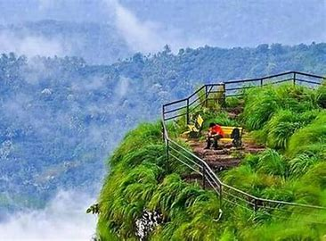
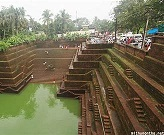
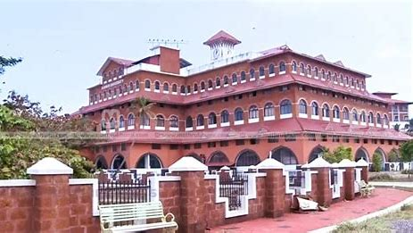

Kannur District is one of the 14 districts along the west coast in the state of Kerala, India. The town of Kannur is the district headquarters and gives the district its name. The old name, Cannanore is the anglicised form of the Malayalam name "Kannur". Kannur district is bounded by Kasaragod District to the north, Kozhikode district to the south and Wayanad District to the southeast. To the east the district is bounded by the Western Ghats, which forms the border with the state of Karnataka (Kodagu district). The Arabian Sea lies to the west.
  